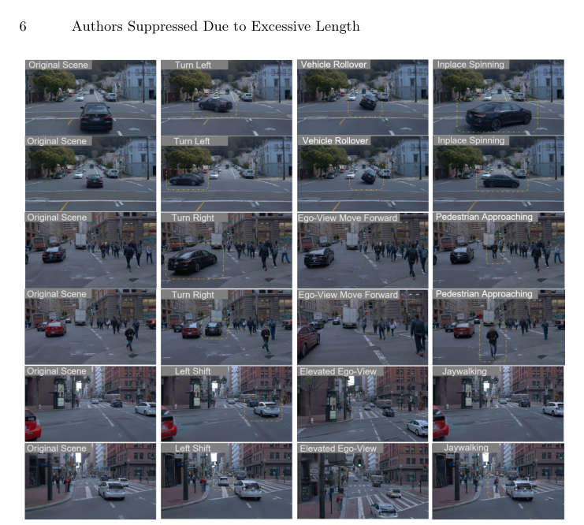
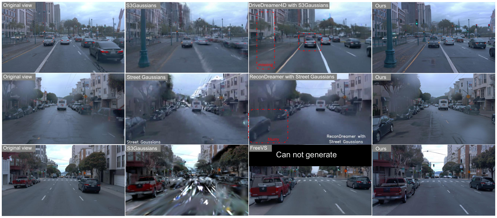
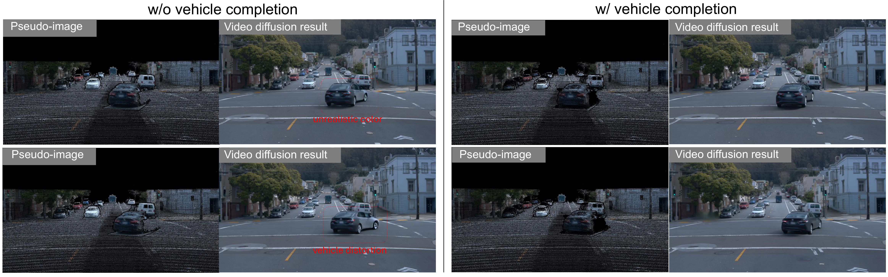

ReinDriveGen
简单摘要
我们推出了ReinDriveGen，这是一个能够完全可控动态驾驶场景的框架，允许用户自由编辑演员轨迹来模拟安全关键的极端情况，例如前车碰撞、漂移汽车、车辆旋转等。论文的基本思路是把 我们的方法从多帧 LiDAR 数据构建动态 3D 点云场景，引入车辆完成模块以根据部分观察重建完整的 360° 几何形状，并将编辑后的场景渲染为引导视频d 的 2D 条件图像 放进同一条解决链路里处理。
进一步看，由于此类经过编辑的场景不可避免地会落在训练分布之外，因此我们进一步提出了一种基于 RL 的训练后策略，具有成对偏好模型和成对奖励机制，从而能够在分布外情况下实现稳健的质量改进。最后得到的主要结论是：大量实验表明，ReinDriveGen 在编辑驾驶场景方面优于现有方法，并在新颖的自我观点合成方面取得了最先进的结果。


逼真的驾驶场景模拟对于自动驾驶系统的开发和验证是必不可少的。论文的基本思路是把 构建这样一个模拟器的一个主要挑战在于训练和推理之间不可避免的分布差距 放进同一条解决链路里处理。
进一步看，为了应对这一根本挑战，我们提出了 ReinDriveGen，这是一个统一的框架，其核心见解是利用基于强化学习 (RL) 的后训练来提高 OOD 条件下的发电质量，超越单独 SFT 所能实现的目标。最后得到的主要结论是：我们将 DiffusionNFT 从图像生成扩展到视频生成，作为我们的 RL 后训练框架。
核心创新
这篇工作的第一个关键点，在于它没有停留在模块堆叠层面，而是重新整理了问题的切入方式：我们的方法从多帧 LiDAR 数据构建动态 3D 点云场景，引入车辆完成模块以根据部分观察重建完整的 360° 几何形状，并将编辑后的场景渲染为引导视频d 的 2D 条件图像。
第二个重要变化是：由于此类经过编辑的场景不可避免地会落在训练分布之外，因此我们进一步提出了一种基于 RL 的训练后策略，具有成对偏好模型和成对奖励机制，从而能够在分布外情况下实现稳健的质量改进。这让方法不仅给出结果，也把为什么这样设计说得更清楚。
从整体效果看，大量实验表明，ReinDriveGen 在编辑驾驶场景方面优于现有方法，并在新颖的自我观点合成方面取得了最先进的结果。这也是它和单纯工程拼装方案拉开差距的地方。
技术细节
从方法链路看，系统首先处理的是：点云条件视频扩散模拟器如果没有明确的 3D 场景表示，视频扩散模型通常很难保持多视图几何一致性，并且执行多轮目标场景编辑仍然具有挑战性。
接下来真正起关键作用的是：因此，我们采用动态 3D 点云作为我们的 3D 主干，并将它们渲染成 2D 伪图像，为视频扩散模型提供像素级条件，灵感来自。这样安排直接带来的收益是：通过完成车辆增强的动态 3D 点云，我们可以在重建场景中自由编辑演员轨迹和自我车辆视点。
在训练和推理阶段，论文还额外考虑了：从编辑的点云渲染的伪图像提供几何指导，但由于 LiDAR 稀疏性、多帧累积伪影和无纹理的完整表面，不可避免地存在噪声和不完整。
$$ \mathcal{L}(\theta) = \mathbb{E}_{\mathbf{c},\; \pi^{\mathrm{old}}(\mathbf{x}_0|\mathbf{c}),\; t} \Big[\, r\,\big\lVert v_\theta^{+}(\mathbf{x}_t,\mathbf{c},t)-\mathbf{v} \big\rVert_2^{2} + (1-r)\,\big\lVert v_\theta^{-}(\mathbf{x}_t,\mathbf{c},t)-\mathbf{v} \big\rVert_2^{2} \,\Big], $$
这组公式用于定义模型中的变量关系和训练目标。建议先看左侧要预测的对象，再看右侧每一项如何约束优化方向。
$$ P(I_1 \succ I_2) = \sigma\!\Bigl(\frac{s_{12} - s_{21}}{2}\Bigr), $$
该公式用于定义核心计算关系。阅读时先看左侧目标量，再看右侧由 P、I_1、I_2 等变量构成的约束和聚合方式。
$$ R_m^i = \frac{1}{N-1}\sum_{j\neq i} \mathds{1}\!\Big[P(a_m^i\!\succ\!a_m^j)>\tau\Big], $$
该公式用于定义核心计算关系。阅读时先看左侧目标量，再看右侧由 R_m、i、N、j 等变量构成的约束和聚合方式。
$$ E(\mathbf{c}) = \frac{\sum_{m=1}^{M} w_m \cdot P(a_m^{\mathrm{rl}}\!\succ\!a_m^{\mathrm{sft}})} {\sum_{m=1}^{M} w_m}, $$
该公式用于定义核心计算关系。阅读时先看左侧目标量，再看右侧由 E、c、m、M 等变量构成的约束和聚合方式。




实验结论
实验部分首先关心的是：比较 我们在两种评估设置下将我们的方法与现有方法进行比较。
对比结果表明，我们与 PVG 、 DriveDreamer4D 、 ReconDreamer 、 S3Gaussian 和 Deformable-GS 进行比较。进一步结合定性现象和消融分析，可以看出：我们还报告了原始轨迹和新颖轨迹图像之间的 FID，以评估真实感。


理解评价
从整篇论文看，它的真正贡献是：由于此类经过编辑的场景不可避免地会落在训练分布之外，因此我们进一步提出了一种基于 RL 的训练后策略，具有成对偏好模型和成对奖励机制，从而能够在分布外情况下实现稳健的质量改进，而不是单纯把扩散模型继续微调。作者把问题落在“分布外驾驶场景如何稳定生成”这个更关键的缺口上。
它最有说服力的地方在于：大量实验表明，ReinDriveGen 在编辑驾驶场景方面优于现有方法，并在新颖的自我观点合成方面取得了最先进的结果。这说明论文的方法链路——3D 点云编辑、车辆补全、再到 RL 后训练——是前后闭合的，而不是各模块各自堆叠。
主要局限在于：当前方案仍受算力和时长限制，更适合离线生成而非实时闭环模拟。如果继续往前推进，一个自然方向是把更长时序、更低成本训练和更广泛的 OOD 场景覆盖一起纳入统一评估。
从整篇论文看，它的真正贡献是：我们基于强化学习的后期训练显着提高了这些 OOD 编辑的生成质量，而无需地面实况监督，而不是单纯把扩散模型继续微调。作者把问题落在“分布外驾驶场景如何稳定生成”这个更关键的缺口上。
以下相关论文可作为延伸阅读：